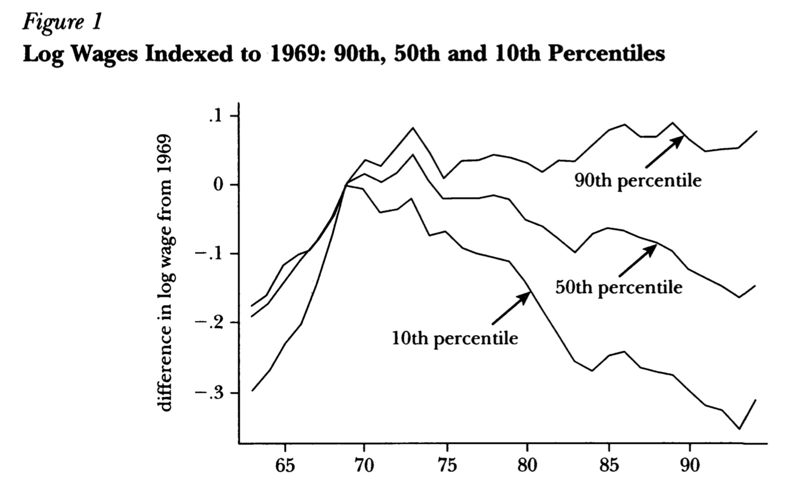
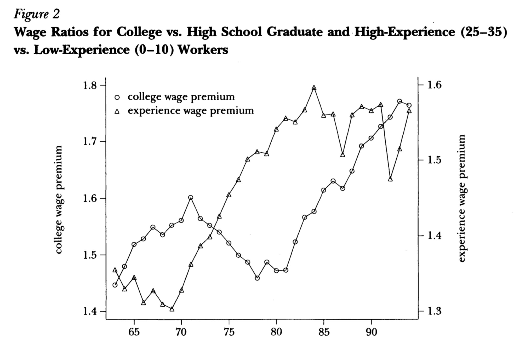
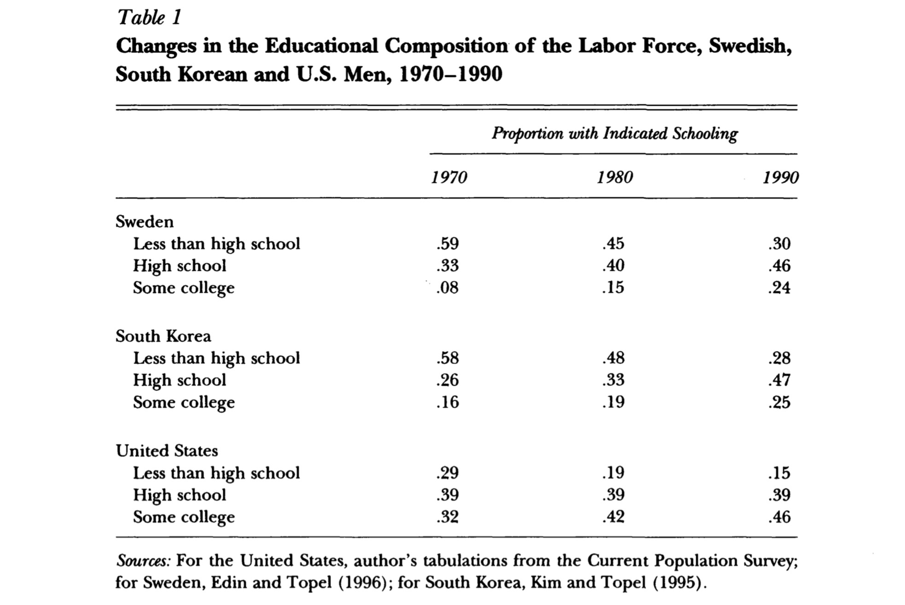
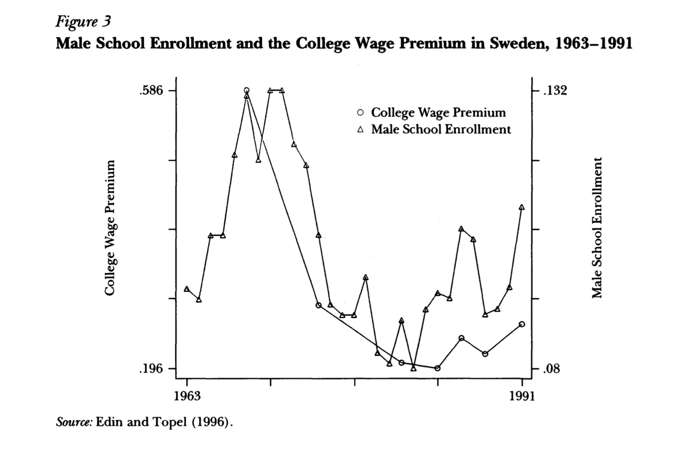
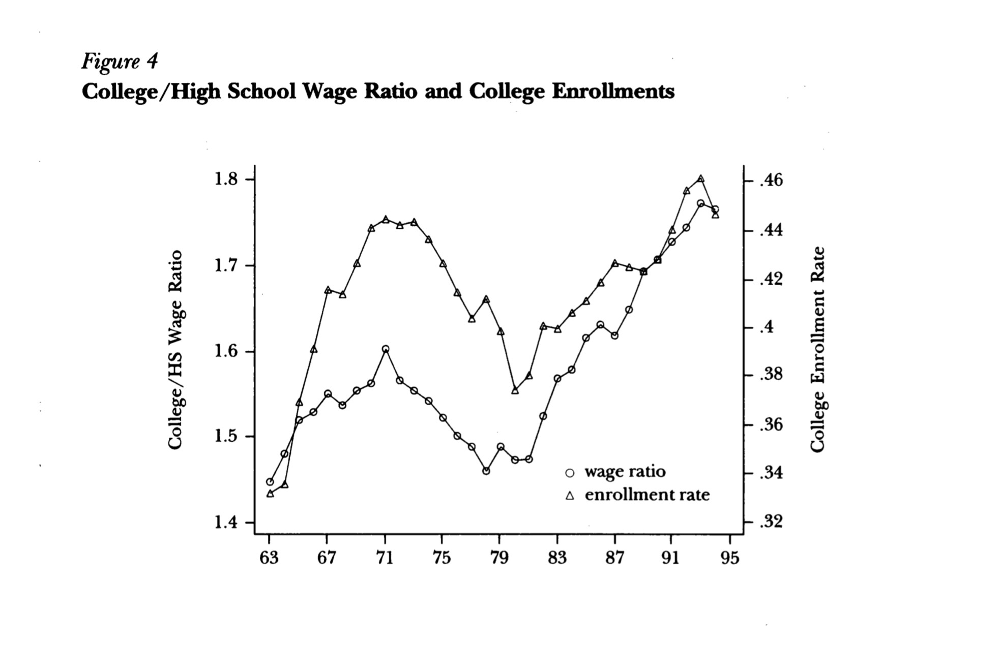

Factor Proprotions and Relative Wages:
The Supply-Side Determinants of Wage Inequaility
Considering all the OECD countries, United States is the one with more differences in wages. In 1990 the U.S income distribution of the households from the top decile had six times greater incomes than the bottom decile. The rising in wage dispersion has been associated with increases in differences in experiences, education and occupation among people. Therefore, increases in inequality are conducted by an increase in the relative demand for skill labor. To solve this, changes in the supply of skills must catch up the increase in the demand for skilled workers.
In this article, we will evaluate the impacts of changes in the supply of skills on wage inequality. This comes from two main sources: First, with the increase in the demand for skilled labor, changes (immigration and the increased participation of women in work) in the labor supply can aggravate inequality. Second, the probability that investment in human capital will stop inequality to raise.
Empirical Background
In Figure 1, the wages of men at the 10th percentile, fell by 26 percent, between 1969 and 1994. When, the 90th percentile rose by about 10 percent. With this, the “90-10” wage differential expanded by 49 percent, showing the problem of wage inequality in the U.S. Figure 1 also illustrates some variations in the magnitude and timing of changes in wage inequality. Until 1979, the wages at the 90th and 50th percentiles moved together, but grew apart thereafter.

Figure 2 shows the returns to education and experience. The more skilled the workers are, the more they receive overtime. The "college wage premium" line shows the ratio of average wages for college and high school graduates. The decline in the returns on a college education in the 1970s, was caused by a rapid expansion in the supply of educated workers. The "experience wage premium" line estimated as, the ratio of average wages for "peak earners" with 25–35 years of labor market experience, to "recent entrants" with 0–10 years of experience.

A Supply and Demand Framework
The differences in relative wages earned by high-skilled workers emerge from:
- Changes in relative supplies of high- and low-skill workers – changes in supply have a smaller impact on wage inequality, as the elasticity of substitution in production rises.
- Technical changes, that raise the relative demand for high-skill workers.
Factors that affect Inequality
Immigration
The immigration impact on wages, depends on how well immigrants substitute natives in the workforce. The effects of immigration on wages tend to be small and immigrant populations are heavily concentrated in particular geographic areas, and among less-skilled workers.
Why are the effects of immigration so small? Geographic mobility of natives offsets the effect of immigration on local factor ratios, so that relative wages don't change by much. Put differently, the labor supply of substitute workers is highly elastic.
Cohort Size
Surprisingly, large birth cohorts raise the relative supply of young workers, causing their wages to fall. With lower relative wages than more experienced workers, wage inequality increases. The wage penalty for being a member of a large cohort dissipates as cohort ages.
Education
As educated workers expand, the returns to schooling reduce, thus inequality decreases. It’s important to focus on the different levels of education of workers, to have a measure of “skill”, and since education is viewed as a long-run solution to rising inequality. Table 1 indicates that changes in the educational composition of the labor force, affect the returns to schooling.

Inequality and Female Labor Force Participation
Female labor force participation has risen. At the same time, male wage inequality has increased. The number of female workers increased, because their participation is high within younger cohorts, who have less experience. And these low-experience, high-education women are good substitutes for low-skilled men. But the pattern of substitution is counterintuitive since, for example, women normally work in different occupations and industries than men.
Changes in Product Demands as a Source of Rising Inequality
Increases/decline in demand for products that employ more high-skilled workers/low-skilled workers, respectively, will tend to increase inequality. But, experimental research found that demand doesn’t have a significant effect on wages.
International Trade and Rising Wage Inequality
The decrease in barriers to international trade, have increased the supply of goods produced by low-skilled labor. With lower prices of these goods on world markets, domestic production of goods produced by low-skilled labor falls, which tend to raise wage dispersion.
However, trade causes a shift toward its comparative advantage in skill-intensive products, the key parameter will be the elasticity of substitution in production between high-skill and low-skill workers.
Wage Inequality and Human Capital Investment
Because the returns to skill are increasing, people fell encouraged to invest in human capital. As a result, in the long-run, the number of skilled workers will increase.
Figure 3 shows that college enrollments respond to declining returns to education. College enrollment dropped by more than half between 1968 and 1981, at the same time returns to schooling also dropped. Even if both college enrollments and returns to education recovered, the returns to education in Sweden remain extraordinarily low.

Figure 4 shows evidence for American men. The rising demand for educated workers generates an increase in quantity supplied, which in the long run will attenuate the growth in the returns to schooling. As the number of skilled workers increases, generated by current and future investment in human capital, this will limit the growth of inequality.

Concluding Remarks
Change in the wage structure is demand-driven, that emerge from technical changes that have favored skilled labor. Opportunities to improve the skills of least skilled-workers fall more heavily in the realm of public policies, that, unfortunately, are not effective. The solution is to affect supply through education and training. But, even if you have more skilled-labor, it doesn’t guarantee that will reduce wage inequality.
Photo from: Unsplash
Original Article: Topel, R. H. (1997): “Factor Proportions and Relative Wages: The Supply-Side Determinants of Wage Inequality”, Journal of Economic Perspectives, 11(2), pp. 55-74.